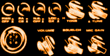

LinkSpoof (45K)
LinkSpoof (45K)
 15 Nov 1999
15 Nov 1999
First Posted

Link Spoof
Subvert VB's Compile Process to Inject Your Own Material Into an Executable
LinkSpoof is a sample from Robert Heinig (rheinig@gmx.net) demonstrating one technique to take over the VB6 compile process in order to compile your own code into the finished executable.
How To Get Going
First download the LinkSpoof sample code. This contains two VB projects: firstly the LinkSpoof source code and the compiled version LINK.EXE, and a test project.
Locate your VB installation directory. It should contain VB6.EXE and LINK.EXE. Rename LINK.EXE to LINK0.EXE and copy LINK.EXE (the LinkSpoof tool) from this archive into the directory. (Editor's note: I may be a good idea to create a folder to back-up the original LINK.EXE before doing anything else). Installation is now complete, operation should be 100% transparent unless you create a file named LinkSpoof.inf in any directory that contains object or library files during a VB build.
In case you're worried, compile one of your existing projects to verify its build is not affected.
Now unpack the Test project and look at the source. Notice that it has two boring functions in Helpers.bas. Run it from the IDE - nothing special. Now take a look at LinkSpoof.inf: It specifies that an EXE build should ignore the output from Helpers.bas and use HelpersC.obj instead.
If you own VC++6, you can open the provided EXE, open frmMain.frm, open HelpersC.cpp, set breakpoints and actually see that the inline code from HelpersC is used. Switch to disassembly view to get that hardcode hacker feeling. You can recompile this project; a linker log and a map file are generated for your late-night reading pleasure. With C++, you can recompile HelpersC as well, just do not use the Build Project functions, do only a single-file compile. HelpersC.obj is all you want. Take another look at LinkSpoof.inf to see why the map file is generated and why the Linker log is verbose. Lastly, read LinkSpoofSample.inf for an explanation of the supported features of the control file. Set ShowCmd to 1 and recompile the test project. While the message box shows the command line VB usually passes to the linker, make a dumpbin of Helpers.OBJ to learn how to find out the names you need to give your replacement functions. Be creative...
Disclaimer etc
This software modifies VB in ways not intended by the designers. Please ensure you have read and understood the disclaimer provided with the package before trying any of the projects.